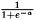
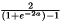
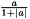

(Gradient Descent)
version 1
version 2
with weight-backtracking
without weight-backtracking
with weight-backtracking
without weight-backtracking
To achieve most flexibility, the ReClaM package is build like a construction kit, i.e. a network is divided into three major components: The structure and the behavior of the network, named here as "model", the algorithm used for the optimization of the free parameters (weights) of the network and the error measures that are used by the optimization algorithms to minimize the network error. You can choose predefined types of each of the components to build your desired network or add new types by your own. To manage the communication between the different components, the class Model Interface is used.
The next table will list all predefined networks, that come with the ReClaM package, with their major features:
| Name | Type | Activation Functions | Error Measures |
Optimization Algorithm |
||
|---|---|---|---|---|---|---|
| Hidden Neurons | Output Neurons | Training | Monitoring | |||
| FFNet | Feed Forward |  | none | none | none | |
| BFFNet | Feed Forward | none | none | none | ||
| MSEFFNet | Feed Forward | Mean Squared Error | none | none | ||
| MSEBFFNet | Feed Forward | Mean Squared Error | none | none | ||
| LinOutFFNet | Feed Forward | none | none | none | ||
| LinOutMSEFFNet | Feed Forward | Mean Squared Error | none | none | ||
| LinOutMSEBFFNet | Feed Forward | Mean Squared Error | none | none | ||
| TanhNet | Feed Forward |  | Squared Error | none | Steepest Descent | |
| LinearOutputTanhNet | Feed Forward | Squared Error | none | Steepest Descent | ||
| ProbenNet | Feed Forward |  | Mean Squared Error | general |
Resilent Backpropagation without weight backtracking |
|
| ProbenBNet | Feed Forward | Mean Squared Error | general |
Resilent Backpropagation without weight backtracking |
||
| MSERNNet | Recurrent | Mean Squared Error | Error Percentage | none | ||
| RBFNet | Radial Basis Function | special | special | none | none | none |
| MSERBFNet | Radial Basis Function | special | special | Mean Squared Error | none | none |
Error measures are used for the optimization of networks, i.e.
the optimization algorithms will adapt the parameters
(weights) of the network in a way, that the error of the
network is minimized.
There are some error measures, that are used only for this
(training) purpose.
Additionally, you can use some error measures to monitor
the current state of the training process, where these
measures are not used by the optimization algorithms.
For the adaptation of the network parameters, ReClaM offers several algorithms. The following list shows all algorithms, separated by their types. An arrow means, that the algorithm at the right is an improvement of the algorithm at the left.
|
Steepest
Descent (Gradient Descent) |
|
Adaptive Learning Rates version 1 version 2 |
|
Resilent Backpropagation with weight-backtracking without weight-backtracking |
|
Improved Resilent Backpropagation with weight-backtracking without weight-backtracking |
|
|
Quickprop |
|||||
|
|
Conjugate Gradients |
|||||
|
|
Stochastic Gradient Descent |
Here you will find tools for reading and writing configuration
files, that can be used to define a special instance (structure) of a
network, completely with error measures and optimization
algorithms. You then only have to read in such a configuration
file to instantly start the training of your network.
You can also use methods to dynamically read in/write training/test
patterns for a network.
An arrow means, that the class/file at the right contains
more specialized methods/functions than the class/file at
the left.
| Low level functions |
|
Base class for network configuration files |
|
Using a predefined network configuration file |
|
|
Reading/Writing input patterns/target values from/to files |
Use the methods of this file to automatically create connection
matrices for networks with several layers.
Flags are offered that can be set to establish standard connections
between the neurons of the network:
Use this class to avoid a overfitting during the training process, that leads to a loss of generality of the network:
Early StoppingEnhance the learning speed of your network by allowing it to add a new pattern to the training set at each step, where the pattern is chosen in a way, that it will minimize the network error.
Variance EstimatorTo give you a better idea, how using the several components of ReClaM to build your own networks, you can take a look at some commented source codes of example programs for the three types of predefined networks. To run these programs please go to the examples directory of ReClaM.
You can also go directly to the ReClaM class reference as created by the doxygen program:
View the overview.